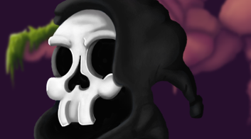
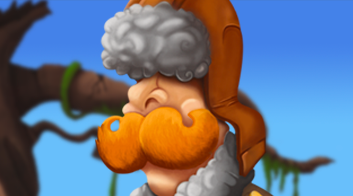

L'objectif
Vous l’avez donc compris, mon objectif est de finir par pouvoir réaliser mon propre jeu iPad par mes propres moyens et ce, même si je n’en ai pas les compétences. Heureusement tout s’apprend.
Mais avant d’être une aventure numérique, Styx est d’abord un parcours personnel extrêmement enrichissant que j’aimerais partager avec vous.
Message d'Henry :
Ah ben c’est bien tout ça mais pour que j’existe il faut d’abord que tu écrives une histoire non ?
Une aventure dans l'au-delà
En effet, il faut une histoire. Styx comme son nom le laisse deviner se passe sur les rives d’un célèbre fleuve du même nom. Retrouvez Henry, un jeune défunt bien décidé à trouver un moyen de traverser le fleuve sans payer le Passeur.
Lire le premier chapitreMessage d'Henry :
Tiens, j’ai grossi...
Bon l’histoire c’est chouette mais ce qui m’intéresse aussi c’est la façon dont je vais la vivre !
Le gameplay et l’expérience de jeu
Le gameplay est une facette intéressante à développer. Malheureusement pour Henry, il finira bien par se faire capturer par le passeur (sinon c’est pas drôle) et ce sera dans l’antre de ce dernier et à travers une série de niveaux à énigmes que Henry, aidé par le joueur, devra évoluer.
Il fallait également exploiter l’avantage du tactile de l’iPad. Le joueur pourra ainsi interagir directement avec les décors ou donner des ordres à Henry, en incarnant le «feu-follet». Un système de jeu où ce sera par des dessins sur votre tablette que vous vous ferez comprendre.
-
Un univers graphique qui se développe
Créer l’univers graphique de Styx est tout un apprentissage artistique. N’ayant eu que des « notions » de dessins jusqu’à maintenant et pour évoluer au mieux dans ce projet, il m’a fallu à nouveau apprendre le dessin à sa base traditionnelle.
-
#1
JanvierPremiers essais sur Henry et réflexions sur le style.
-
#2
MarsMise en place des décors et de l’univers crayonné.
-
#3
AvrilLa direction artistique du projet est définie et le concept semble bien lancé.
Message d'Henry :
Quoi c'est ça mon apparence définitive ? Vraiment ?
-
Les personnages principaux
Henry a bien évolué et ma façon de travailler également. Je peux enfin cibler les personnages principaux et l’univers qui doit les entourer. Et tester pour la première fois le digital painting.
- Rencontrer le Passeur
- Rencontrer Henry
Message d'Henry :
Plutôt sympa comme évolution, mais si tu me dis que ça s'arrête là, c'est décidé j'me barre. Je deviens quoi après ?
Continuez l’aventure
Poursuivez votre parcours à travers l’évolution du projet